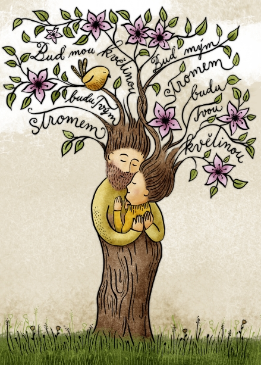

Naše pohádkaV podhůří Vysokých Tater vyrostl malý stromek. Při dosažení určitého počtu letokruhů se vydal na cestu, hledat svůj les. Cesta byla dlouhá, přešel sedmero hor a sedmero řek. Tu nedaleko svého cíle objevil květinu, která měla podobně vytyčenou cestu. Zkusily jit tedy spolu a cesta ve dvou byla ku prospěchu oběma. Když našly les, který se stromu i květině zamlouval, silnější zapustil kořeny a křehčí ho ozdobila. Spolu měly pevný základ a zároveň vzkvétaly. Jejich listy se propletly nakolik, že nebylo poznat, které komu patří. Není divu, že si v nich našlo domov malé ptáčátko. Na oslavu společného bytí pozvaly všechny obyvatele lesa, aby před nimi mohly tiše zaprosit:„Buď můj strom, budu tvá květina.“ „Buď mou květinou, budu tvým stromem.“ „Ať se naše listy nikdy nerozpletou a jsou k nerozeznání jeden od druhého.“ |
 |